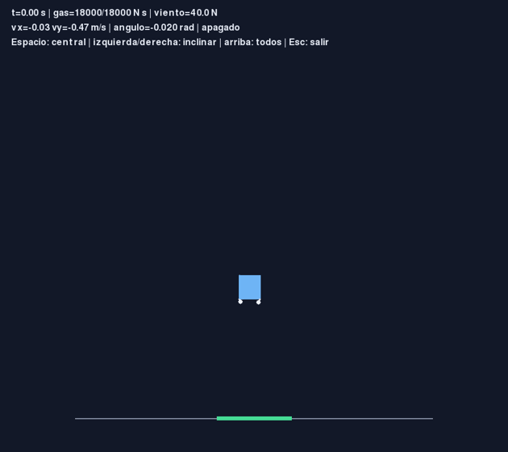
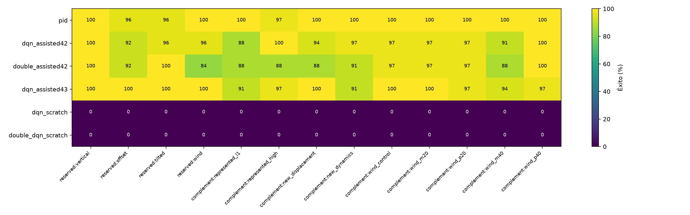
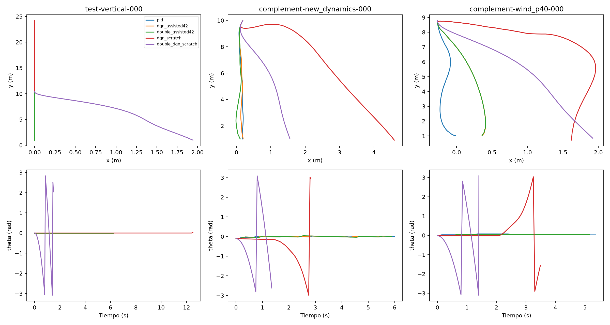

Simulador académico propio, inspirado conceptualmente en Tesla Roadster. Animaciones de estados guardados: este documento no ejecuta física, entrenamiento ni evaluación nueva.
Metodología: DQN y Double DQN asistidos por demostraciones PID combinan imitación y TD. Durante evaluación solo actúa la red. La asistencia es una ampliación metodológica adicional. No se aisló el beneficio de TD frente a imitación sola.

Consignas y asignación discreta con memoria interna.
Argmax de la red, sin profesor ni exploración.
Mismas condiciones, gas, acciones y criterios.
| Método | 100 casos reservados | 288 complementarios |
|---|---|---|
| PID | 98/100 | 287/288 |
| DQN asistido42 | 96/100 | 275/288 |
| Double asistido42 | 94/100 | 266/288 |
| DQN / Double desde cero, cada uno | 0/100 | 0/288 |


Informe matemático y experimental · Matriz de alcance · Guion de exposición
PID fue más consistente que los métodos principales en esta ejecución. No se demostró superioridad general, adaptación automática o menor coste computacional de las redes. El consumo se compara separando éxitos de fracasos.